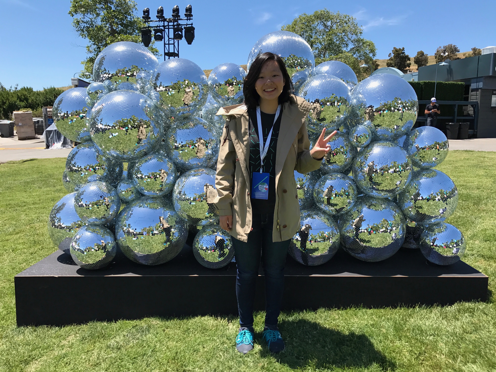

<div>

  <section>
    <h1>Hello! I'm Natalie 龍馥瑜.</h1>
 
    <p>
      I'm an aspiring data/tech/investigative journalist studying Journalism and Computer Science at the University of Hong Kong. I was an intern at the <a href="https://twitter.com/scmpgraphics" target="_blank">South China Morning Post Graphics Desk</a> and <a href="http://droste.hk" target="_blank">Droste</a>. I also led <a href="http://www.engineering.hku.hk/tecHKU/" target="_blank">TecHKU</a>, a technology news site at the university. In summer 2017, I was a visiting student with the Center for Civic Media at the MIT Media Lab.</p>

      My passion for technology stems from a curiosity to understand how it affects our lives and how we can manage it for personal entertainment and for social good.

      <p>Outside of reporting, I love getting involved in tech/startup and journalism communities.</p>

      <p>I am currently in Hong Kong completing my final year of studies.</p>

      <p>Check out some of my work via the navigation menu.</p>
  </section>

<!--   <section>
    <h2>Subscribe</h2>

    <p>
      subscribe <a href="{{ "/feed.xml" | prepend: site.baseurl }}">via RSS</a>
    </p>
  </section>
 -->
</div>
